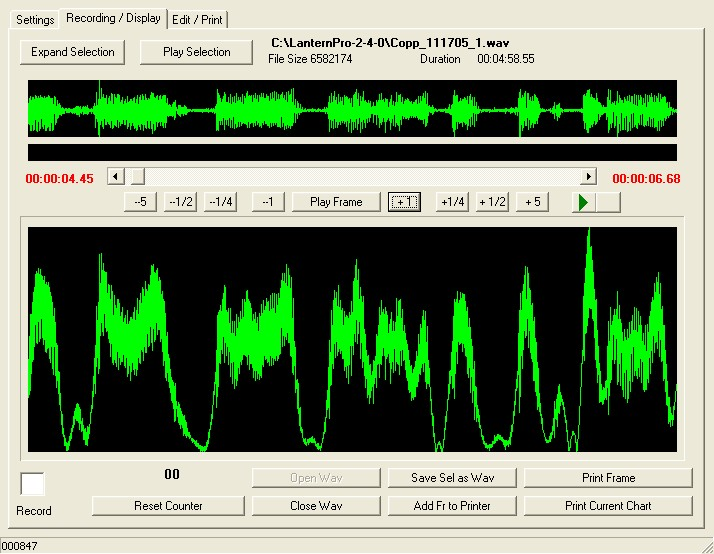

Digital Camera : Picture Perfect
SAN JOSE, California (AP) -- Point. Shoot. Print. Getting a hard copy of your memories has never been easier.Picture this: More than two-thirds of the estimated 17 billion prints from digital cameras made this year were created from the comfort of snap-happy American homes. Another 27 percent came from the photofinishing services of retailers, where people either use the self-serve computer terminals at the counter or place their orders online for pickup later at the store. The remainder, according to market researcher IDC, were delivered straight to consumers via online services that nowadays charge as low as a dime a print, not counting shipping costs. In fact, while prices vary, market researchers say the retail route is generally cheaper than do-it-yourself inkjet printing. Beyond these main options for getting pictures made are countless variations.
In Pennsylvania, proud parents can order pictures of their newborns from a photo kiosk before they leave the hospital. In Maine, customers can go to Cafe Click, one of the growing number of digital printing lounges that offer gourmet coffee and a kids play area. With so many printing choices today -- not to mention price cuts and promotions -- shutterbugs often find choosing how to get a print in hand is the hardest part. The method of printing will usually depend on how quickly you want to see the results, how many you want, how far you're willing to travel to get them, and how much you want to pay. But this much is clear: "You have a lot more flexibility now than what you used to have with film where you always had to just drop it off," said Chris Chute, digital imaging analyst at IDC.
What's less obvious is what each of these options really costs. The average price of printing a 4-by-6 at home is 27 cents, if you include the costs of photo paper and ink but not the printer, according to IDC. Special value bundles, such as the purchase of an ink cartridge and 100 sheets of photo paper, could bring the price down as low as 22 cents per print. By comparison, the retail segment, which includes stores like Walgreen Co. or Costco Wholesale Corp., has an average price of 21 cents a print, said IDC. For online photo services like Kodakgallery.com, Shutterfly.com or Hewlett-Packard Co.'s Snapfish.com, the average price is 30 cents, including shipping. Yet cost isn't always the deciding factor.  Alexander Dyer of Bethlehem, Pennsylvania, likes the relaxing atmosphere, friendly service, free coffee and easy-to-use software at the DigiPrint Lounge inside Dan's Camera City store in nearby Allentown. The 73-year-old retired executive goes there almost weekly, paying 29 cents apiece for standard-sized photos of his grandchildren, latest vacation, or beloved pet.
In fact, every worker there knows his West Highland terrier's name, Quincy. Dyer spent part of Wednesday morning at the lounge ordering prints of his Thanksgiving family weekend and choosing a photo Christmas card starring Quincy. Dyer has a computer at home but never bothered to try printing there, even though it's been three years since he got his first digital camera. "Going to Dan's is just easier for me," he said. "And I find it's cheaper and faster to go to a place like that." Still, printing at home has a key advantage: get prints anytime you want as long as you're willing to wait roughly 30 seconds to a minute for each print. Inkjet printers that can produce decent photos can be found for as little as $99 nowadays, said Ed Lee, digital photography analyst at InfoTrends/CAP Ventures. Common models that have more features sell for between $149 and $199.
Most newer printers will produce image quality comparable to what you would find at most retailers. And if you're willing to spend more on high-end archival photo paper, your prints from home might even technically outperform the ones from retailers, Lee said. But if you're looking to do a lot of prints, say, more than a dozen, then sitting at home -- waiting for the printing to complete, sometimes having to feed the paper by hand each time -- isn't ideal. Retailers can do big jobs quickly, and will do it in under an hour if you pay a bit more. Many of them now let patrons upload their photos first from home for in-store pickup later, catering to those who would rather not deal with the risk of waiting in line at the photo counter. If you're not in a rush and are willing to wait a few days for the prints, then online services could be the most convenient since they'll send your photos to your mailbox, or a friend's. Keep in mind, however, that uploading a photo order to a Web site also takes some time -- roughly a minute per picture if you have a broadband connection, or as long as 4 minutes per picture if you have a dial-up connection. A decision might also depend on the medium of the prints.
Retailers and online photo services are making it easier than ever to create photo greeting cards from templates and are offering an ever-expanding list of photo-related gifts, from photo books and calendars to dog leashes, posters and mouse pads. InfoTrends predicts retail photo printing will surpass home printing by 2010, as retail options continue to expand and prices drop even lower. Companies like Lucidiom Inc., which makes the "APMs" or Automated Photo Machines found at Dan's Camera City and 14,000 other locations, are also tweaking the technology to make editing and printing photos as painless as possible. Lucidiom's APMs, which can either print photos on the spot or serve as an ordering site for photo labs, are being installed not only at retail stores but also at hospitals and schools, said the company's chief executive, Steve Giordano Sr. "Instead of you looking for the photo retailer, we're making it convenient just like an ATM now," he said. Copyright 2005 The Associated Press. All rights reserved.This material may not be published, broadcast, rewritten, or redistributed.
| Sommaire | Mots Clés | A | B | C | D | E | F | G | H | I | J | K | L | M | N | O | P | Q | R | S | T | U | V | W | X | Y | Z | Autres |